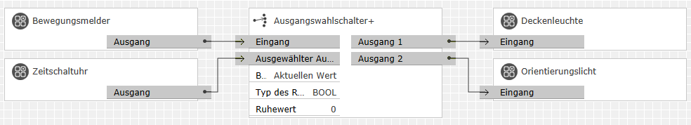

Der Ausgangswahlschalter+ leitet ankommende Telegramme vom Eingang unverändert auf den ausgewählten Ausgang weiter. Der Ausgang, an den das eingehende Telegramm weitergeleitet wird, wird über den Index-Eingang "Ausgewählter Ausgang" bestimmt. Die Anzahl der Ausgänge ist zwischen 1 und 50 wählbar.
Wenn sich der ausgewählte Ausgang ändert, kann wahlweise
Abgewählte Ausgänge können wahlweise auf einen Ruhewert gesetzt werden oder unverändert bleiben.
Bezeichnung |
Porttyp |
Beschreibung |
|---|---|---|
|
Eingang |
Any |
Hier empfangene Telegrammwerte werden an den Ausgang weitergeleitet, dessen Index am Eingang "Ausgewählter Ausgang" anliegt. |
|
Ausgewählter Ausgang |
Integer |
Bestimmt den Ausgang, an den Werte weitergeleitet werden. Der Wertebereich für den normalen Betrieb reicht von 0 (Ausgang 1) bis n-1 (Ausgang n), wobei n die Anzahl der Ausgänge ist. Diese Zählweise entspricht der des Gira-Bausteins "Ausgangswahlschalter". Werte außerhalb dieses Bereichs können verwendet werden, um keinen Ausgang auszuwählen, also alle Eingangstelegramme zu verwerfen. |
Bezeichnung |
Porttyp |
Beschreibung |
|---|---|---|
|
Ausgang 1 |
Any |
Der ausgewählte Ausgang unter diesen gibt die vom Eingang weitergeleiteten Telegramme aus. Alle anderen Ausgänge erhalten den Ruhewert oder behalten ihren Wert, wenn kein Ruhewert gesetzt ist. |
Bezeichnung |
Porttyp |
Als Eingang zuschaltbar? |
Beschreibung |
|---|---|---|---|
|
Anzahl der Ausgänge |
Integer |
nein |
Dieser Parameter legt die Anzahl der Ausgänge des Bausteins im Bereich 1..50 fest. |
|
Beim Auswählen senden |
Auswahl |
nein |
Legt fest, was beim Auswählen eines Ausgangs an diesen gesendet werden soll:
|
|
Typ des Ruhewerts |
Auswahl |
nein |
Legt die Art des Ruhewerts fest, der an abgewählte Ausgänge gesendet werden soll. Ist <keiner> gewählt, so verschwindet das Eingabefeld für den Ruhewert. Abgewählte Ausgänge behalten dann die Werte, die sie vor dem Abwählen zuletzt hatten. |
|
Ruhewert |
Je nach Auswahl |
nein |
Legt den Wert fest, der an abgewählte Ausgänge gesendet werden soll. |
Manchmal ist es nützlich, dass eine Sperre nicht nur unerwünschte Telegramme unterdrückt, sondern nach Aufheben der Sperre sofort einen Wert an den Ausgang sendet. Dies erlaubt der Ausgangswahlschalter+ mit den folgenden Einstellungen:
Der Eingang "Ausgewähler Ausgang" verhält sich damit so wie vom Eingang "Aktiv" der Sperre gewohnt:
Um einen Binärwert für diesen Eingang verwenden zu können, braucht man zusätzlich einen Typumwandler.
Im gesperrten Zustand wird der jeweils letzte am Eingang empfangene Wert intern zwischengespeichert. Beim Entsperren (Übergang des Eingangs "Aktiv" von 1 → 0) wird der zuletzt gespeicherte Wert dann sofort gesendet.
Dieses Beispiel hat auch Gira für seinen Ausgangswahlschalter verwendet. Die Beleuchtung in einem Flur wird durch einen Bewegungsmelder angesteuert. Bei erkannter Bewegung soll tagsüber die Deckenleuchte und nachts das Orientierungslicht eingeschaltet werden.
Mit dem Ausgangswahlschalter+ lässt sich dieses Beispiel erweitern. Wenn zur Umschaltzeit der Zeitschaltuhr das Licht eingeschaltet ist, wird das nicht mehr benötigte Licht sofort aus ("Ruhewert: 0") und das ab jetzt aktive Licht eingeschaltet ("Beim Auswählen senden: Aktuellen Wert").

Dieses Beispiel findet sich bei der Beschreibung des Statistik-Bausteins.